08 / Mobility & interiors
The Multi Coach Interior
A new way to travel by shaping NS intercity interiors around the different needs of people working, relaxing and travelling together.
Three environments in one journey
Our project team felt that the uniform NS intercity carriages did not match the different ways people use a train. The needs of passengers who want to work, rest or socialise can conflict when they share one space. We designed the Multi Coach Interior as three complementary environments: the Work Coach, the Relax Coach and the Social Coach.
The concept aims to make each journey more comfortable for its purpose while considering access for a broad range of passengers. The three coach types below show how the same train can support focus, quiet recovery and connection.
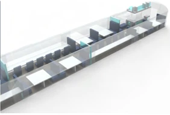
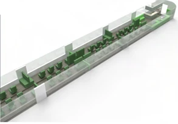
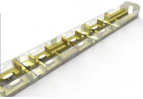
A productive space with privacy
The Work Coach is for passengers who want to keep working or studying while travelling. The interior is intended to feel comfortable and focused, with separation between workspaces so that passengers are less likely to disturb one another and do not feel surrounded by a crowded carriage.
Large windows and workspaces facing outside help make the environment feel open. Comfortable chairs, separation walls, power outlets, Wi-Fi and a coffee bar support longer periods of work. The concept takes inspiration from productive places such as university libraries, while giving passengers more autonomy over how they use their journey.
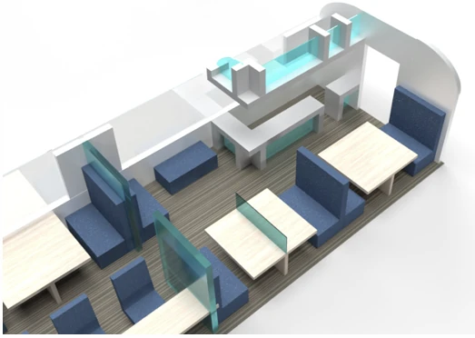
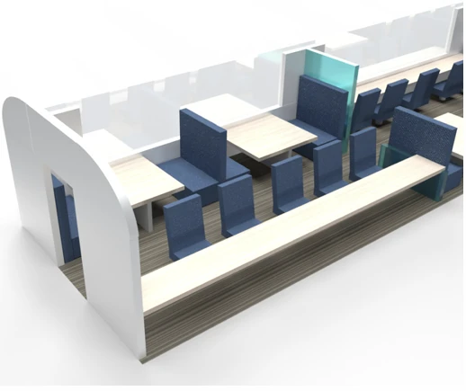
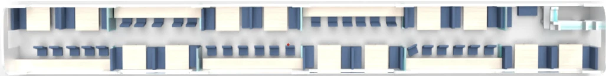
Comfort, freedom and a quieter trip
The Relax Coach is for passengers who value physical and mental comfort, a sense of freedom and a pleasant atmosphere. It offers a range of ways to sit, from sofas and couches to adjustable individual chairs, so travellers can choose a position that suits them.
Tables with wireless charging, cup holders and power outlets make it easier to settle in. By providing a calm place to rest during longer journeys, the concept aims to increase comfort and reduce how long travel feels.
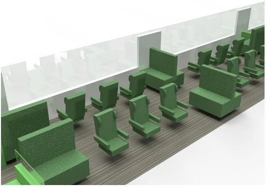
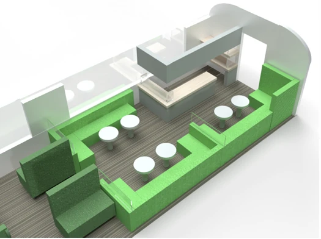
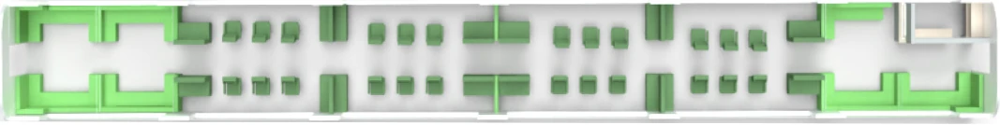
Space to travel together
The Social Coach is designed for passengers travelling in groups and for people who enjoy conversation. Comfortable group seats in different sizes make it easier to sit together. Soft background music is intended to break the silence and make it more natural to talk.
Keeping more social and potentially noisy activity in a dedicated coach helps reduce disturbance in the Work and Relax Coaches. The aim is a more pleasant shared journey, where people can connect without taking away the quieter options available elsewhere on the train.
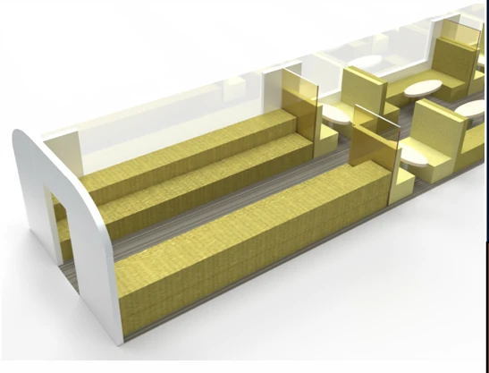
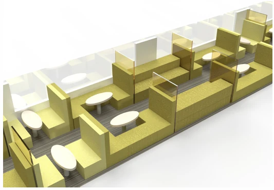
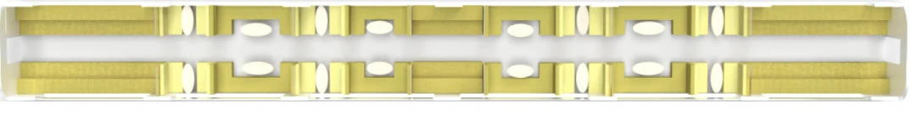